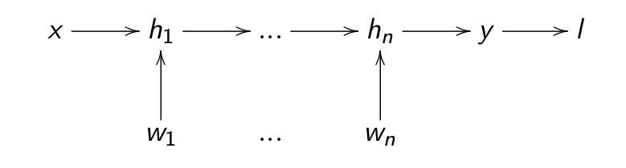
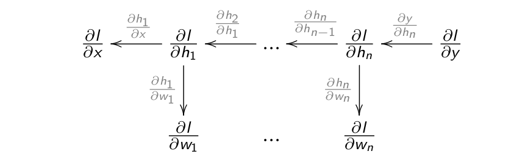

A Multi-Layer Perceptron (MLP) or feedforward neural network is composed of:
an input layer for the input vector \(\mathbf{x}\)
one or several hidden layers allowing to project non-linearly the input into a space of higher dimensions \(\mathbf{h}_1, \mathbf{h}_2, \mathbf{h}_3, \ldots\).
an output layer for the output \(\mathbf{y}\).
If there is a single hidden layer \(\mathbf{h}\), it corresponds to the feature space.
Each layer takes inputs from the previous layer.
If the hidden layer is adequately chosen, the output neurons can learn to replicate the desired output \(\mathbf{t}\).
Fully-connected layer
The operation performed by each layer can be written in the form of a matrix-vector multiplication:
Fully-connected layers (FC) transform an input vector \(\mathbf{x}\) into a new vector \(\mathbf{h}\) by multiplying it by a weight matrix\(W\) and adding a bias vector\(\mathbf{b}\).
A non-linear activation function transforms each element of the net activation.
Activation functions
Modern activation functions
Rectified linear function - ReLU (output is continuous and positive).
\[
f(x) = \max(0, x) = \begin{cases} x \quad \text{if} \quad x \geq 0 \\ 0 \quad \text{otherwise.} \end{cases}
\]
Parametric Rectifier Linear Unit - PReLU (output is continuous).
\[
f(x) = \begin{cases} x \quad \text{if} \quad x \geq 0 \\ \alpha \, x \quad \text{otherwise.}\end{cases}
\]
Softmax activation function
For classification problems, the softmax activation function can be used in the output layer to make sure that the sum of the outputs \(\mathbf{y} = \{y_j\}\) over all output neurons is one.
A complex pattern-classification problem, cast in a high dimensional space non-linearly, is more likely to be linearly separable than in a low-dimensional space, provided that the space is not densely populated.
In practice it does not matter how non-linear the function is (e.g PReLU is almost linear), but there must be at least one non-linearity.
Training a MLP : loss functions
We have a training set composed of N input/output pairs \((\mathbf{x}_i, \mathbf{t}_i)_{i=1..N}\).
Optimization problem:
What are the free parameters \(\theta\) (weights \(W^1, W^2\) and biases \(\textbf{b}^1, \textbf{b}^2\)) making the prediction \(\mathbf{y}\) as close as possible from the desired output \(\mathbf{t}\)?
We define a loss function\(\mathcal{L}(\theta)\) of the free parameters which should be minimized:
For regression problems, we take the mean square error (mse):
If we can compute all these partial derivatives / gradients individually, the problem is solved.
Gradient of the loss function
We have already seen for the linear algorithms that the derivative of the loss function w.r.t the net activation of the output \(\textbf{net}_\mathbf{y}\) is proportional to the prediction error\(\mathbf{t} - \mathbf{y}\):
If we know the hidden error\(\mathbf{\delta_h}\), the update rules for the input weights \(W^1\) and \(\mathbf{b}^1\) also take the form of the delta learning rule:
If \(\mathbf{h}\) and \(\mathbf{\delta_h}\) have \(K\) elements and \(\mathbf{y}\) and \(\mathbf{\delta_y}\) have \(C\) elements, the matrix \(W^2\) is \(C \times K\) as \(W^2 \times \mathbf{h}\) must be a vector with \(C\) elements.
\((W^2)^T \times \mathbf{\delta_y}\) is therefore a vector with \(K\) elements, which is then multiplied element-wise with the derivative of the transfer function to obtain \(\mathbf{\delta_h}\).
The backpropagated error is an average of the output errors \(\delta_{{y}_k}\), weighted by the output weights between the hidden neuron \(h_j\) and the output neurons \(y_k\).
The backpropagated error is the contribution of each hidden neuron \(h_j\) to the output error:
If there is no output error, there is no hidden error.
If a hidden neuron sends strong weights\(|W^2_{jk}|\) to an output neuron \(y_k\) with a strong prediction error \(\delta_{{y}_k}\), this means that it participates strongly to the output error and should learn from it.
If the weight \(|W^2_{jk}|\) is small, it means that the hidden neuron does not take part in the output error.
MLP: the universal approximation theorem
Cybenko, 1989
Let \(\varphi()\) be a nonconstant, bounded, and monotonically-increasing continuous function. Let \(I_{m_0}\) denote the \(m_0\)-dimensional unit hypercube \([0,1]^{m_0}\). The space of continuous functions on \(I_{m_0}\) is denoted by \(C(I_{m_0})\). Then, given any function \(f \in C(I_{m_0})\) and \(\epsilon > 0\), there exists an integer \(m_1\) and sets of real constants \(\alpha_i, b_i\) and \(w_{ij} \in \Re\), where \(i = 1, ..., m_1\) and \(j = 1, ..., m_0\) such that we may define:
as an approximate realization of the function f; that is,
\[ | F(\mathbf{x}) - f(\mathbf{x})| < \epsilon\]
for all \(x \in I_m\).
This theorem shows that for any input/output mapping function \(f\) in supervised learning, there exists a MLP with \(m_1\) neurons in the hidden layer which is able to approximate it with a desired precision!
Properties of MLP
The universal approximation theorem only proves the existence of a shallow MLP with \(m_1\) neurons in the hidden layer that can approximate any function, but it does not tell how to find this number.
A rule of thumb to find this number is that the generalization error is empirically close to:
where \(\text{VC}_{\text{dim}}(\text{MLP})\) is the total number of weights and biases in the model, and \(N\) the number of training samples.
The more neurons in the hidden layer, the better the training error, but the worse the generalization error (overfitting).
The optimal number should be found with cross-validation methods.
For most functions, the optimal number \(m_1\) is high and becomes quickly computationally untractable. We need to go deep!
3 - Deep neural networks
Deep Neural Network
A MLP with more than one hidden layer is a deep neural network.
Backpropagation for deep neural networks
Backpropagation still works if we have many hidden layers \(\mathbf{h}_1, \ldots, \mathbf{h}_n\):

If each layer is differentiable, i.e. one can compute its gradient \(\frac{\partial \mathbf{h}_{k}}{\partial \mathbf{h}_{k-1}}\), we can chain backwards each partial derivatives to know how to update each layer:

Backpropagation is simply an efficient implementation of the chain rule: the partial derivatives are iteratively reused in the backwards phase.
Gradient of a fully connected layer
A fully connected layer transforms an input vector \(\mathbf{h}_{k-1}\) into an output vector \(\mathbf{h}_{k}\) using a weight matrix \(W^k\), a bias vector \(\mathbf{b}^k\) and a non-linear activation function \(f\):
A fully connected layer \(\mathbf{h}_{k} = f(W^k \, \mathbf{h}_{k-1} + \mathbf{b}^k)\) receives the gradient of the loss function w.r.t. its output \(\mathbf{h}_{k}\) from the layer above: